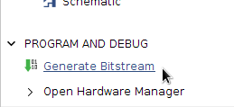
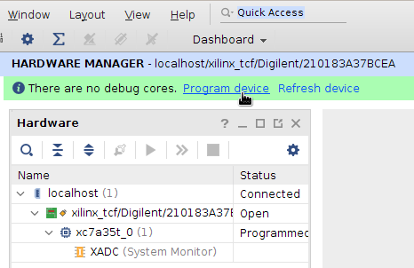

Le module PmodMIC3 de Digilent permet de connecter un microphone
sur un connecteur Pmod d’une carte à FPGA du même constructeur.
Il comporte un microphone analogique et un convertisseur analogique/numérique ADCS7476 de Texas Instruments.
Ce convertisseur se pilote à travers une interface série synchrone très répandue sous le nom de
bus SPI.
Dans ce projet, le FPGA jouera le rôle de maître sur le bus SPI et le module PmodMIC3 jouera le rôle d’esclave.
Le FPGA devra donc contenir la logique nécessaire à la transmission de données en respectant le protocole SPI.
Cette entité possédera les paramètres génériques suivants :
Paramètre
Type
Rôle
CLK_FREQUENCY_HZ
Entier
La fréquence du signal d’horloge global du système, en Hz
BIT_RATE_HZ
Entier
La vitesse de communication sur le bus de données série, en Hz
BITS_PER_SAMPLE
Entier
Le nombre de bits par échantillon du signal audio
L’entité MicrophoneReceiver produit un flux de données en utilisant le protocole ready/valid.
Elle joue le rôle de producteur :
Port
Direction
Type
Rôle
clk_i
Entrée
Logique
Le signal d’horloge global du système
reset_i
Entrée
Logique
La commande de réinitialisation du système
chip_select_n_o
Sortie
Logique
La commande de sélection du convertisseur A/N (active au niveau bas)
serial_clk_o
Sortie
Logique
Le signal d’horloge série à destination du convertisseur A/N
serial_data_i
Entrée
Logique
Les données série en provenance du convertisseur A/N
valid_o
Sortie
Logique
Indique qu’un nouvel échantillon audio est disponible
ready_i
Entrée
Logique
Indique que le consommateur est prêt à recevoir un nouvel échantillon audio
data_o
Sortie
Vecteur logique signé
La valeur de l’échantillon audio courant
Pour les valeurs logiques, vous utiliserez le type std_logic du package
ieee.std_logic_1164.
Pour les vecteurs logiques représentant des nombres signés, vous utiliserez
le type signed du package ieee.numeric_std.
Réalisation du récepteur
Au cours de son fonctionnement, l’entité MicrophoneReceiver communique avec le
convertisseur analogique/numérique du module PmodMIC3 pour déclencher des
acquisitions et recevoir les valeurs d’échantillons.
L’acquisition d’un échantillon s’effectue de la manière suivante :
Sélectionner le convertisseur en mettant chip_select_n_o à '0'.
Produire un signal d’horloge sur serial_clk_o avec une fréquence correspondant à la vitesse de communication souhaitée (BIT_RATE_HZ).
Au rythme de l’horloge série, recevoir et mémoriser les données que le convertisseur retourne sur l’entrée serial_data_i.
Libérer le convertisseur en mettant chip_select_n_o à '1'.
Lorsque la communication avec le convertisseur est terminée, la sortie valid_o est mise à '1'.
La valeur du nouvel échantillon est disponible sur la sortie data_o.
L’entité MicrophoneReceiver attend que ready_i soit activé pour lire
l’échantillon suivant.
Un scénario typique de fonctionnement est décrit par le chronogramme suivant :
Dans l’exemple ci-dessus, l’entité est paramétrée pour retourner des échantillons sur 16 bits signés
(BITS_PER_SAMPLE = 16).
Le convertisseur, lui, retourne des échantillons sur 12 bits non signés, la valeur 0 correspondant à la plus petite valeur
possible.
Malgré cela, la communication s’effectue toujours sur 16 cycles de serial_clk_o,
dont seuls les 12 derniers servent à transporter des données utiles sur serial_data_i.
Machine à états et signaux de contrôle
Le fonctionnement du récepteur sera géré par une machine à trois états avec
les états suivants :
Nom
Rôle
INIT_STATE
État initial
BUSY_STATE
Acquisition en cours
VALID_STATE
Donnée disponible
Lors de sa réinitialisation (reset_i), le récepteur doit se mettre dans
l’état INIT_STATE.
Au front d’horloge suivant, il doit passer dans l’état BUSY_STATE pour
déclencher une première conversion.
Il reste dans l’état BUSY_STATE pendant toute la durée d’une communication
avec le module PmodMIC3. La sortie chip_select_n_o vaut '0'.
Dans l’état VALID_STATE, il met la sortie valid_o à '1' et attend que ready_i passe à '1'.
Ensuite, il retourne dans l’état BUSY_STATE.
Pour mesurer la durée dans l’état BUSY_STATE, nous recommandons de créer deux compteurs :
un pour compter le nombre de bits et un pour mesurer la durée d’un bit.
En fonction de CLK_FREQUENCY_HZ et BIT_RATE_HZ, proposez une expression permettant de calculer
le nombre de périodes de clk_i pour recevoir un bit.
Le fichier MicrophoneReceiverTestbench.vhd contient un banc de test pour
l’entité MicrophoneReceiver.
Pour exécuter la simulation, nous fournissons un script qui automatise
le démarrage du simulateur et l’exécution d’une séquence de commandes :
Dans le menu Tools, choisissez Run Tcl Script.
Allez dans le dossier src/Microphone et sélectionnez le fichier MicrophoneReceiverTestbench.tcl.
Au cours de la simulation, le banc de test affiche des messages dans l’onglet
Tcl Console lorsque le comportement de votre entité n’est pas conforme aux
attentes.
À cette étape, vous pouvez obtenir les messages suivants :
Message
Signification
chip_select_n is low too early
La sortie chip_select_n_o reste à '1' pendant moins de 10 ns
chip_select_n is high too early
La sortie chip_select_n_o revient à '0' avant d’avoir reçu toutes les données
Horloge serial_clk_o
Au repos, la sortie serial_clk_o est à '1'.
Pendant la durée d’une communication avec le convertisseur analogique/numérique, elle prend la forme d’un signal
carré sur 16 périodes en commençant par un niveau haut.
Vous devez piloter serial_clk_o en visant à atteindre un rapport cyclique de 50%.
En pratique, ce sera le cas si une période de serial_clk_o correspond à un nombre
pair de périodes de clk_i.
Dans les autres cas, la documentation constructeur du convertisseur indique que
le rapport cyclique de serial_clk_o doit être compris entre 40% et 60%.
Relancez la simulation et validez le fonctionnement du circuit.
Vérifiez les messages affichés par le banc de test dans l’onglet Tcl Console.
À cette étape, vous pouvez obtenir les messages suivants lorsque serial_clk_o
a une valeur incorrecte, change de valeur au mauvais moment, ou a des durées
incorrectes à l’état haut ou bas :
Message
Signification
Expected serial_clk = '1'
La sortie serial_clk_o n’est pas à '1' au repos
serial_clk is low too early
La sortie serial_clk_o passe à '0' trop tôt après le début d’une communication
Wrong serial_clk high pulse duration
La durée à l’état haut de serial_clk_o n’est pas celle attendue
Wrong serial_clk low pulse duration
La durée à l’état bas de serial_clk_o n’est pas celle attendue
Mémorisation des données reçues
L’entrée serial_data_i transporte la valeur de l’échantillon, bit par bit au rythme de serial_clk_o,
en commençant par le bit de poids fort.
Elle est mise à jour à chaque front descendant de serial_clk_o.
D’après la documentation constructeur, dans le pire des cas, il peut s’écouler 40 ns
entre le front descendant de serial_clk_o et le moment où serial_data_i devient stable.
Pour la vitesse de communication la plus élevée (20 MHz, soit 50 ns par période), il est donc souhaitable
de mémoriser les données à la fin de la période de serial_clk_o.
Le plus simple pour nous est de toujours effectuer la mémorisation juste avant de déclencher
le prochain front descendant de serial_clk_o.
En respectant les règles de conception de circuits synchrones,
complétez l’architecture RTL de manière à mémoriser serial_data_i en
exploitant le principe du registre à décalage illustré par ce chronogramme :
Sur le chronogramme ci-dessus, vous noterez qu’on ne mémorise pas directement le bit de poids fort D11,
mais que l’on prend son inverse D11 (voir les explications dans l’encadré ci-dessous).
Les valeurs fournies par le convertisseur analogique/numérique sont codées en binaire décalé selon
le principe suivant : 0000 0000 0000 représente la plus petite valeur négative et
1111 1111 1111 représente la plus grande valeur positive.
Le tableau ci-dessous donne quelques exemples en précisant la représentation de ces nombres en complément à deux.
Décimal
Binaire décalé
Complément à deux
2047
1111 1111 1111
0111 1111 1111
2046
1111 1111 1110
0111 1111 1110
⋮
⋮
⋮
3
1000 0000 0011
0000 0000 0011
2
1000 0000 0010
0000 0000 0010
1
1000 0000 0001
0000 0000 0001
0
1000 0000 0000
0000 0000 0000
-1
0111 1111 1111
1111 1111 1111
-2
0111 1111 1110
1111 1111 1110
-3
0111 1111 1101
1111 1111 1101
⋮
⋮
⋮
-2047
0000 0000 0001
1000 0000 0001
-2048
0000 0000 0000
1000 0000 0000
Pour passer du binaire décalé à la notation en complément à deux,
nous remarquons qu’il suffit d’inverser le bit de poids fort.
La taille du registre data_reg est fixée à 12 bits.
Le port de sortie data_o, de son côté, a une taille réglable définie par le paramètre générique BITS_PER_SAMPLE.
Pour copier la valeur du registre sur le port de sortie, il faut donc tenir compte d’une éventuelle
différence de taille et effectuer, si nécessaire, une extension du bit de poids fort afin de préserver le signe.
Pour ce faire, vous pouvez utiliser la fonction resize du package ieee.numeric_std :
data_o <= resize(data_reg, BITS_PER_SAMPLE);
Relancez la simulation et validez le fonctionnement du circuit.
Vérifiez les messages affichés par le banc de test dans l’onglet Tcl Console.
À cette étape, vous pouvez obtenir le message suivant lorsque data_o
a une valeur incorrecte au moment où done passe à '1' :
Message
Signification
Wrong value for data
Lorsque valid_o vaut '1', la valeur du signal data_o n’est pas celle attendue
Application de démonstration
Nous vous proposons de réaliser une application permettant de valider votre contrôleur de microphone sur le matériel.
Cette application consistera à reproduire sur une sortie audio les sons capturés par le microphone.
Pour ce faire, on reliera simplement une instance de votre entité MicrophoneReceiver avec une instance
de l’entité I2STransmitter.
L’entité MicrophoneDemo devra posséder les ports suivants :
Port
Direction
Type
Rôle
clk_i
Entrée
Logique
Le signal d’horloge global du système
btn_center_i
Entrée
Logique
Le bouton de réinitialisation du système
led_o
Entrée
Logique
Une LED indiquant le verrouillage de l’horloge secondaire
mic_chip_select_n_o
Sortie
Logique
La commande de sélection du convertisseur A/N (active au niveau bas)
mic_serial_clk_o
Sortie
Logique
Le signal d’horloge série à destination du convertisseur A/N
mic_serial_data_i
Entrée
Logique
Les données série en provenance du convertisseur A/N
i2s_master_clk_o
Sortie
Logique
Le signal d’horloge maître à destination du récepteur I2S
i2s_serial_clk_o
Sortie
Logique
Le signal d’horloge série à destination du récepteur I2S
i2s_serial_data_o
Sortie
Logique
Les données série à destination du récepteur I2S
i2s_left_right_clk_o
Sortie
Logique
Le signal d’horloge sélectionnant la voie gauche ou droite
L’architecture structurelle est constituée des éléments suivants :
Un générateur d’horloge.
Une instance de MicrophoneReceiver, qui recevra des données audio en provenance du module PmodMIC3.
Une instance de I2STransmitter, qui transmettra les données audio vers le module PmodI2S.
Le microphone fournissant un signal audio sur une seule voie, les données en sortie de MicrophoneReceiver seront
mises à l’échelle et copiées sur les voies gauche et droite de l’entité I2STransmitter.
La synchronisation des deux instances est assurée par les signaux mic_valid et i2s_ready.
Lorsque vous aurez validé cette application de démonstration,
insérez une instance de Vocoder entre l’instance de MicrophoneReceiver
et l’instance de I2STransmitter.
Synthétiser et implémenter le circuit
Indiquez que l’entité MicrophoneDemo est l’entité principale du circuit :
Générez le fichier binaire à charger dans le FPGA :
Flow Navigator → Program and Debug → Generate Bitstream.

Vivado va enchaîner toutes les étapes d’analyse des fichiers sources, de synthèse logique, de placement et routage,
pour terminer par la génération d’un fichier binaire à charger dans le FPGA.
À la fin des opérations, la boîte de dialogue Bitstream Generation Completed s’affiche.
Choisissez Open Hardware Manager.
Configurer le FPGA
Vérifiez que l’interrupteur d’alimentation de votre carte Basys3 est en position OFF.
Le cavalier situé à côté de l’interrupteur doit être en position USB.
Branchez le module PmodMIC3 sur le connecteur JB (en haut sur le côté droit de la carte).
Branchez le module PmodI2S sur le connecteur JA (en haut sur le côté gauche de la carte)
et branchez un casque stéréo ou des enceintes sur le connecteur jack.
Vous ne connaissez pas à l’avance le volume de la sortie audio.
Ne mettez pas vos écouteurs sur les oreilles avant d’être sûr
que le son n’est pas trop fort.
Reliez le connecteur micro-USB de la carte à un port USB de votre PC.
Mettez la carte sous tension.
En haut du panneau Hardware Manager, pressez Open target et choisissez Auto Connect.
Pressez ensuite Program Device et sélectionnez le fichier MicrophoneDemo.bit.

Implémentation de référence
Pour vous éviter de rester bloqués à cette étape, nous fournissons deux fichiers
de référence :
src/Microphone/MicrophoneReceiver-ref.vhd est un fichier source VHDL du récepteur,
dont le contenu a été volontairement rendu illisible, et dont les valeurs de paramètres
génériques ont été figées.
Nous vous conseillons de ne pas perdre de temps à essayer de le rendre lisible.
ref/MicrophoneDemo-ref.bit est le fichier binaire de l’application de démonstration à
charger directement dans le FPGA à partir du Hardware Manager de Vivado.
Effectuez l’action Program Device et choisissez le fichier MicrophoneDemo-ref.bit.
{kind=link}
{kind=link}
{kind=link}
{kind=link}
{kind=link}
{kind=link}
{kind=link}